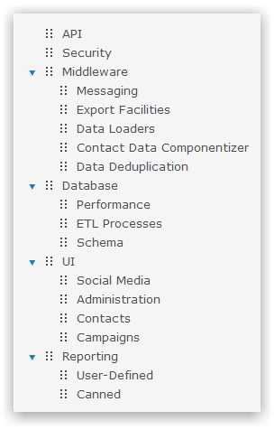
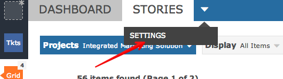
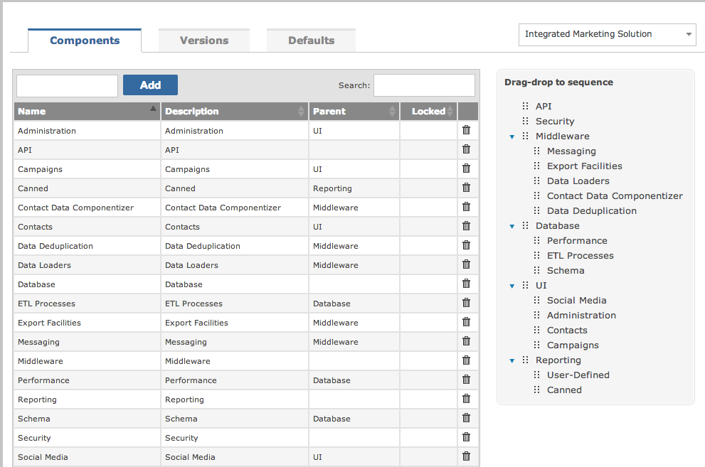
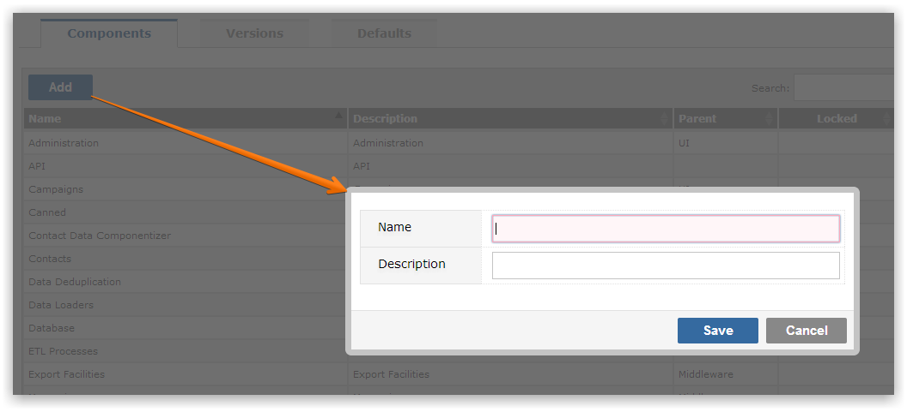

Almost every project can be broken down into smaller, logical areas. These 'building blocks' of a project are termed Components in Gemini. A key feature of Components in Gemini is the ability to nest them in a hierarchical fashion. Thus you can create Components like:

Every project enables the creation of Components (sometimes known as Area).
To create Components, navigate to the project for which you wish to create values and select Settings from the project menu. You will then see the following options just below the menu bar. Click on Components.

Below is the components list for a project:

Add components as required.

NoteThe project Settings menu can only be accessed by user groups who have the "Can Manage Components" permission.